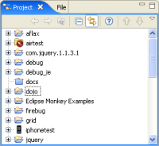
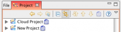
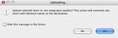

This page explains what the Project View in Aptana is and how to display it.
Contents |
What
The Project View is a tree view of all of the projects and associated files in your workspace. You can expand and collapse the folders in this view to make it easier to access your files for editing.
Projects, Project Explorer, Navigator Views
There are a few similar views for projects, here are the differences:
- The Project Explorer view is the simplest view of projects where navigator and project allow you to drill down into a project or folder via the buttons on the toolbar.
- The Projects view is a view we created that extends the Navigator view but integrates better in Aptana Studio such as allows custom background and foreground settings and adds listeners when you delete a project so that you can also delete any run configurations you have associated with that project.
How
Display the Project View
  Project view
Project view
{kind=link}
Steps:
- From the Window menu, select Show View > Project .
- To display the contents of a single folder, right-click the folder and select Go Into from the context menu. To display all folders again, click the Back button
 at the top of the Project View.
at the top of the Project View.
- To close the Project View, click the Close button (X) in the upper right of the tab.
Filter
You can create a filter to display only a subset of your projects by creating a "working set" of projects. See Creating a working set of projects for more information.
Collapse All
You can collapse all open folders into the top-level folder by clicking the Collapse All button .
{kind=link}
Cloud Deployment and Syncing
 Projects deployed on the Cloud
{kind=link}
Projects that are deployed to the Aptana Cloud will be marked in the project view with a globe icon next to their name (if they are open).
You can use buttons at the top of the project view to sync, upload, and download files in projects that are deployed on the cloud. For projects not deployed to the Aptana Cloud, you can launch cloud deployment using the "cloud deployment" button (it looks like a globe) . In this case, the sync, upload, and download buttons will be grayed out.
{kind=link}
 Upload confirmation
{kind=link}
To upload a file or folder to the cloud, select the item in the project view, and click the "upload" button  . A pop-up window will ask you to confirm your upload. The process for downloading is similar. Click the download button . A pop-up confirmation will appear.
. A pop-up window will ask you to confirm your upload. The process for downloading is similar. Click the download button . A pop-up confirmation will appear.
 .
.
{kind=link}
Note: uploading or downloading a file will replace the file you are moving if it already exists.
Clicking the "sync" button will launch the Smart Sync window
Related Topics
- About Eclipse Views
- Displaying Aptana Views
- Displaying the Bookmarks View
- Displaying the File View
- Displaying the Outline View
- Displaying the Tasks View
- Displaying the Walkthroughs View
- Navigating open files with Next Editor or Previous Editor
- Setting up your web browser configuration
- Creating a working set of projects